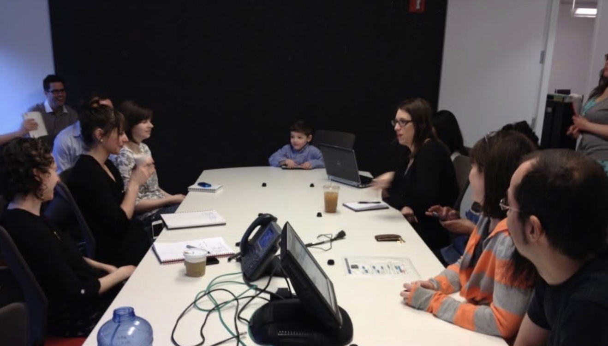
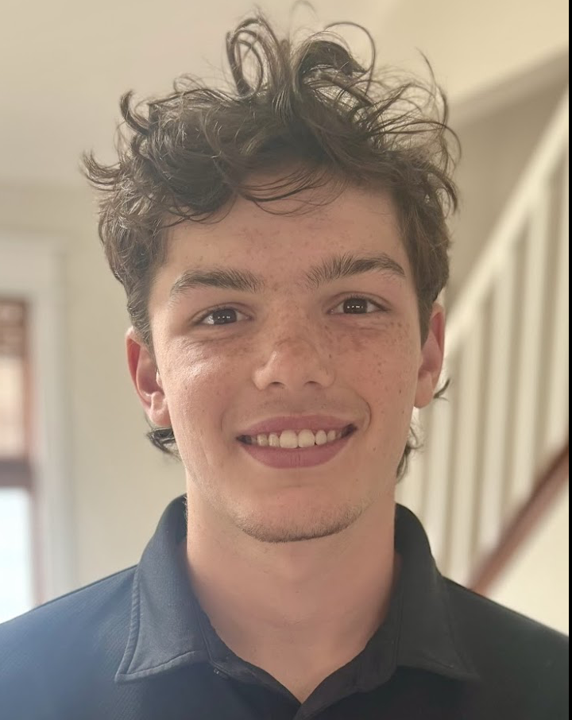

A College Essay — A Childhood Memory
The conference room where it all began
The only place to go from failure is to win.
Tom Platz
The alarm screamed as my clouded vision pierced through the darkness of my bedroom. I rolled over and violently turned off the alarm. I was ambitious to wake up at three o’clock in the morning to go fishing with my friend. On one fishing trip, we caught a grand total of zero fish. When I arrived home frustrated, I watched a video on bodybuilding to destress from my journey. “The only place to go from failure is to win.” In that moment, Platz’s words were engraved in my brain. For years, I thought failure was the worst possible outcome until I realized it was the only way to create true ambition. This small moment in my life has led me to find my “win.”
Nickelodeon Headquarters, Manhattan — Bring Your Kid to Work Day
When I was six years old, my dad, who worked for Nickelodeon, took me to Bring Your Kid to Work Day. I was excited to walk into this giant building overlooking Manhattan, surrounded by paintings and drawings. I felt at home. My dad worked in the app development and creation department, so we sat at this round table with a blank piece of paper, and they asked us to write down an idea for a game. Inspired by my favorite show at the time, School of Rock, I wrote a game where you could play the instruments and had to complete challenges to avoid getting caught by the principal. At the time, I knew it had the potential to become a real game.
I forgot about this memory until years later, when I was scrolling through the app store and saw School of Rock. I was furious! It was basically the game I pitched in the conference room years earlier. Recently, I reminded my dad of this story, and in our conversation, he remembered my ideas, but not the details of the day. He was amazed at how I wouldn’t stop creating.
I learned then that failure to recognize me
led me to understand who I truly am.
I am a creator.
I researched online courses that would teach me the fundamentals of filmmaking. I was excited when the word “creativity” was listed as a top skill set for the field. This is what comes naturally to me. I had found a new ambition. I enrolled in a Khan Academy summer class called Pixar in a Box. I was hooked, clocking in hours day by day, listening to the background and the movie development process from the real Pixar creators.
I related to the storyboard writers. On little cards, they drew the scene, hung it up on the wall, and collaborated to have a cohesive plot and bring the characters to life for Inside Out. Everyone had a role that could change the value of the story and make it more meaningful. Listening to their journey, I felt the same excitement of purpose I discovered in the conference room where I created a game. I was itching to become a team member in such an inspirational environment.
This time, sharing my ideas would give me a deeper understanding of the complexities of filmmaking. Establishing a connection and conveying a message to the audience is the drive and ambition that every creator yearns for. Through my course, I learned how to overcome the creative block. I had gained the creator’s vision and confidence.
My mind is an ongoing reel of ideas. When the “line is cast,” I may be misunderstood by many, but I have found my strength by “fighting the usual fish” and grounding myself through curiosity and creativity. I value being ambitious and constantly generating unique and interesting ideas. I thrive in collaborative environments where I bring new perspectives and continually develop innovative approaches to various topics.
“Through my discovery trip, I hooked the most significant catch — by knowing who I am.”
Here & Now

The same boy. Still creating.